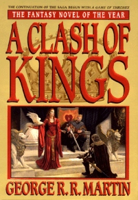

Sudar kraljeva
Sudar kraljeva je drugi roman u Pesma leda i vatre, epske fantazije serije amerièkog pisca Džordža R. R. Martin oèekuje da se sastoji od sedam tomova. To je prvi put objavljen 16. novembra 1998. u Velikoj Britaniji, iako je prvi Sjedinjene Države izdanje nije pratio do marta 1999. Kao i njegov prethodnik, A Game of Thrones, je osvojio nagradu lokus (1999.) za najbolji roman i bio je nominovan za Nebula Avard (takoðe u 1999. godini) za najbolji roman. U maju 2005. godine Meisha Merlin objavio ogranièenu seriju romana, bogato ilustrovan John Hove.
Roman je prilagoðena za televiziju HBO kao druge sezone TV serije Game of Thrones.
Sudar kraljeva je i ime prve ekspanzije na Game of Thrones igra na tabli.